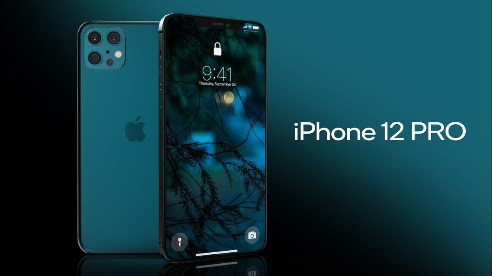

#TELEFONIA👥
⬆️📌IPHONE 12 PRO, cosa c'è da sapere.
Da poco disponibile anche in Italia, è arrivato il nuovo Iphone 12 Pro ed a breve anche il nuovo Iphone 12 Pro Max. La prima cosa che viene da dire è "un lusso per pochi" considerandone il costo, ma al contempo uno strumento unico nel suo genere. Le sue principali caratteristiche sono:
✅ Un ritorno al passato nel Design che NON dispiace. La variante Pro ha una scocca in acciaio. Il retro è in vetro satinato e frontalmente è stata aggiunta una nuova protezione per le cadute grazie ad un rivestimento in cristalli di ceramica. In più è anche compatto ed impermeabile ad acqua e polvere secondo lo standard IP68.
✅ Ultimo potentissimo processore Apple A14 Bionic. È un processore a 6 core, supportato da una GPU a 4 core. La RAM ammonta a 6 GB ed è possibile scegliere fra i tagli di memoria da 128, 256 e 512 GB, tutti non espandibili.
✅ Presente la connettività 5G, con una modalità auto che permette di disattivare il 5G non solo quando non c’è copertura, ma anche quando non è necessaria. Lo smartphone oltre alla singola SIM supporta anche la eSIM virtuale. Tra le mancanze ovviamente il jack audio da 3,5 millimetri. Il connettore è ancora lightning: supporta l’uscita video, ma una porta USB-C ovviamente sarebbe stata utile, vista la più ampia compatibilità.
✅ Fotocamera: Apple si è affidata anche quest’anno ad un modulo a tripla fotocamera da 12 megapixel. La qualità è eccezionale e Apple ha limato ancora ciò che poteva, aumentando l’apertura della fotocamera principale ed introducendo la modalità notturna anche sulla grandangolare e nella modalità ritratto.
✅ Video: migliorato anche il comparto video con la possibilità di registrare video in 4K a 60fps ora anche con standard HDR. È un risultato veramente notevole, soprattutto perché i filmati sono consistenti e fluidi.
✅ Display: lo schermo è quasi identico a quello di iPhone 12. È un 6,1 pollici di diagonale, con tecnologia OLED e risoluzione di 1176 x 2532 pixel. Uno schermo che Apple chiama SuperRetina XDR e che è di altissima qualità, sia in termini di resa, che di colore.
✅ Batteria: iPhone 12 Pro è dotato di una batteria da 2.815 mAh, leggermente più piccola rispetto allo scorso anno. Questo non vuol dire una sensibile diminuzione di autonomia, ma piuttosto che iPhone 12 Pro probabilmente non può garantire la stessa tranquillità del modello dello scorso anno.
iPhone 12 Pro è, per chi se lo può permettere, il TOP di gamma. È un telefono eccezionale. Come poteva essere altrimenti essendo una versione rifinita di iPhone 12?
Se lo desideri, iscriviti ai mie canali social per restare aggiornato ⬇️
Social MediaInoltre se hai trovato utile ed interessante questo articolo, non esitare a condividerlo, a lasciare un tuo mi piace 👍, o seguire la mia pagina Facebook per sostenermi e continuare ad informare. Grazie anticipatamente a chi vorrà farlo.